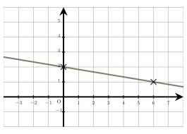
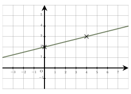

Séance 30 — Révisions complètes
$0,007\,6$ est égal à :
A.
$0,76\,\%$
B.
$7,6\,\%$
C.
$0,007\,6\,\%$
D.
$76\,\%$
$0,007\,6=\dfrac0,76100=**0,**76 \,\%$
La bonne réponse est la réponse A.
Dans un repère du plan, on a représenté une droite $(D)$.
On considère le point $A$ de coordonnées $(-96\,;\,18)$.
Quelle est la position du point $A$ par rapport à la droite $(D)$ ?

A.
Le point $A$ est situé au-dessus de la droite $(D)$
B.
Le point $A$ appartient à la droite $(D)$
C.
Le point $A$ est situé en dessous de la droite $(D)$
D.
On ne peut pas déterminer la position de $A$ par rapport à la droite $(D)$
On commence par déterminer l’équation réduite de la droite $(D)$.
Son coefficient directeur est $-\dfrac16$ et son ordonnée à l’origine est $2$.
L’équation réduite de $(D)$ est : $y=-\dfrac16x+2$.
L’ordonnée du point de $(D)$ d’abscisse $-96$ est donnée par : $y=-\dfrac16\times (-96)+2$, ce qui donne
$y=\dfrac966+2=16+2=18$.
L’ordonnée du point de $(D)$ d’abscisse $-96$ est $18$.
L’ordonnée du point de $(D)$ d’abscisse $-96$ est égale à l’ordonnée de $A$, donc le point $A$ appartient à la droite $(D)$.
La bonne réponse est la réponse B.
Une boîte contient $80$ billes.
Dans la boîte la proportion de billes vertes est égale à $0,5$.
Le nombre de billes vertes dans la boîte est égal à :
A.
$49$
B.
$40$
C.
$39$
D.
$48$
Pour trouver le nombre de billes vertes, on multiplie le nombre total de billes par la proportion de billes vertes :
$80 \times 0,5 =8 \times \underbrace10 \times 0,5_5 = 40$
Il y a donc $**40**$ billes vertes dans la boîte.
La bonne réponse est la réponse B.
Dans cette boutique souvenir, l’offre du jour annonce : 4 magazines pour $15$,\euro.
Combien coûteront 5 magazines ?
A.
$16$,\euro
B.
$18,75$,\euro
C.
$12$,\euro
D.
$1,33$,\euro
Méthode 1 – calcul du prix unitaire :
Le prix d’un magazine est : $\dfrac15\text\,\euro4 = 3,75$,\euro.
Donc le prix de $5$ magazines est : $5 \times 3,75\text\,\euro = **18,**75$,\euro.
Méthode 2 – par produit en croix :
On a la proportion : $\dfrac4 \text magazines15 \text\,\euro = \dfrac5 \text magazines? \text\,\euro$.
Donc $4 \times ? = 5 \times 15$, d’où $? = \dfrac5 \times 154 = 18,75$.
Le prix de 5 magazines est $**18,**75$,\euro.
Vérification : $4 \times 18,75 = 75$ et $5 \times 15 = 75$.
La bonne réponse est la réponse B.
$\left(\dfrac19\right)^-1$ est égal à :
A.
$\dfrac19$
B.
$9$
C.
$-\dfrac19$
D.
$-9$
$\left(\dfrac19\right)^-1=9^1=**9**$
La bonne réponse est la réponse B.
Quel est l’ensemble des solutions de l’inéquation $3x+6<0$ ?
A.
$]-\infty~;~2[$
B.
$]-\infty~;~-2[$
C.
$[-2~;~+\infty[$
D.
$[2~;~+\infty[$
$
\beginaligned
3x+6&<0
3x&<-6
x&<\dfrac-63
x&<-2
\endaligned
$
L’ensemble de solutions est : $\bigg]-\infty~;~-2\bigg[$.
La bonne réponse est la réponse B.
Devoirs — Séance 30 — Révisions complètes
$\dfrac1720$ est égal à :
A.
$17,20\,\%$
B.
$0,85\,\%$
C.
$8,5\,\%$
D.
$85\,\%$
Dans un repère du plan, on a représenté une droite $(D)$.
On considère le point $A$ de coordonnées $(64\,;\,17)$.
Quelle est la position du point $A$ par rapport à la droite $(D)$ ?

A.
Le point $A$ appartient à la droite $(D)$
B.
Le point $A$ est situé en dessous de la droite $(D)$
C.
Le point $A$ est situé au-dessus de la droite $(D)$
D.
On ne peut pas déterminer la position de $A$ par rapport à la droite $(D)$
Un jeu contient $60$ cartes.
Dans ce jeu la proportion de cartes rouges est égale à $0,6$.
Le nombre de cartes rouges dans ce jeu est égal à :
A.
$30$
B.
$24$
C.
$33$
D.
$36$
Julien remarque dans cette papeterie que 5 gommes coûtent $4$,\euro.
Pour acheter 11 gommes, il devra payer :
A.
$13,75$,\euro
B.
$10$,\euro
C.
$1,82$,\euro
D.
$8,8$,\euro
$\left(\dfrac15\right)^-1$ est égal à :
A.
$\dfrac15$
B.
$-5$
C.
$5$
D.
$-\dfrac15$
Quel est l’ensemble des solutions de l’inéquation $-6x+42\leqslant0$ ?
A.
$]-\infty~;~7[$
B.
$]-\infty~;~-7[$
C.
$[7~;~+\infty[$
D.
$[-7~;~+\infty[$